Overall use case model
Product CRUD completed by Member A; raw material ovals are Member B scope for review. · Open SVG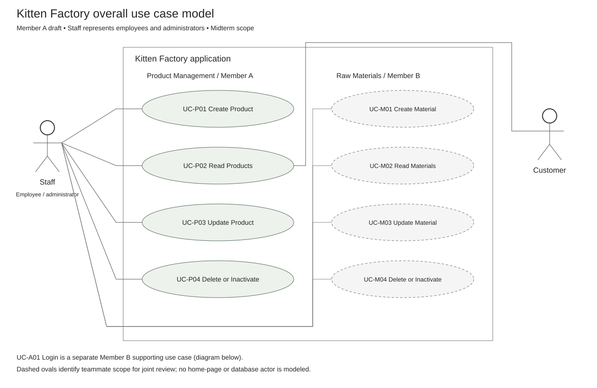
Supporting login model
Member B scope. No authentication is implemented in the front-end demonstration. · Open SVG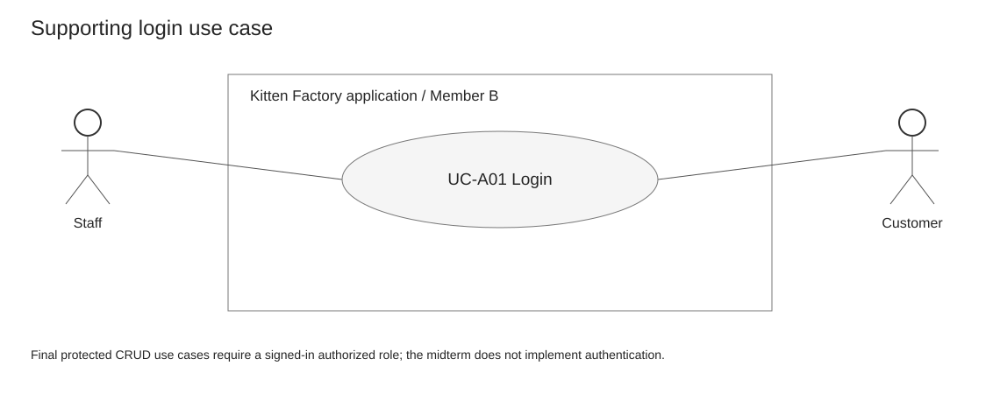
AD-P01 Create product
Start/end nodes, decisions, alternate outcomes, and validation loops describe the midterm prototype. · Open SVG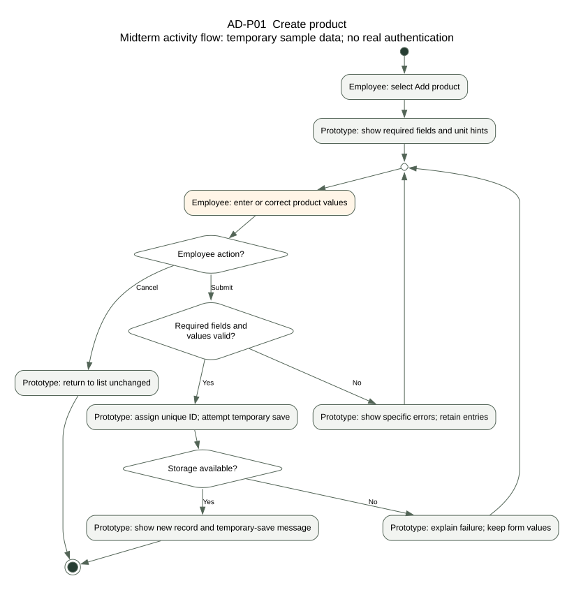
AD-P02 Read products
Start/end nodes, decisions, alternate outcomes, and validation loops describe the midterm prototype. · Open SVG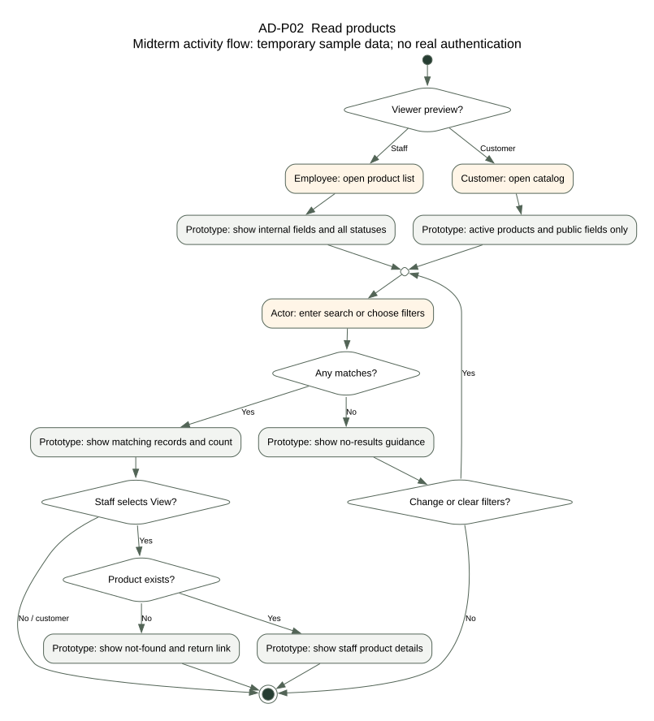
AD-P03 Update product
Start/end nodes, decisions, alternate outcomes, and validation loops describe the midterm prototype. · Open SVG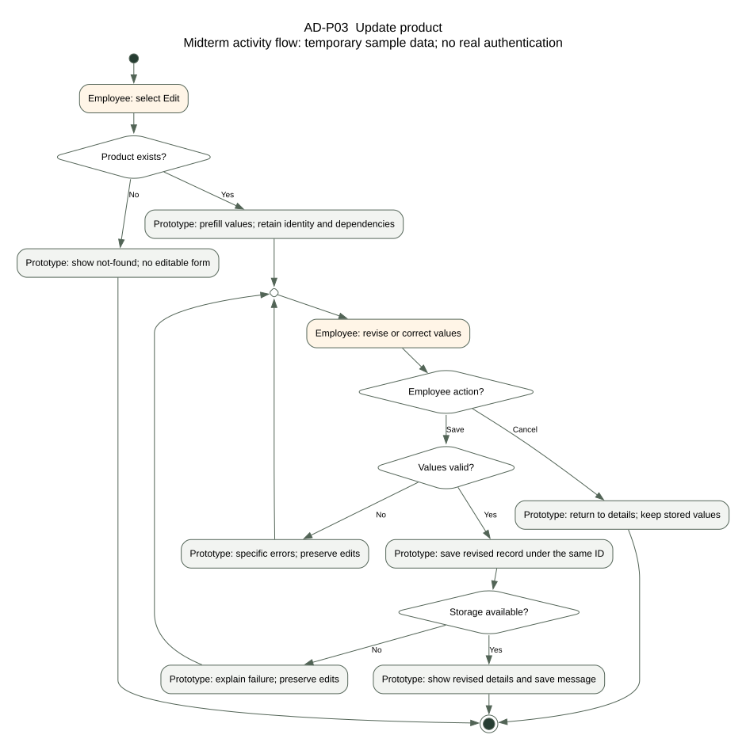
AD-P04 Delete or inactivate product
Start/end nodes, decisions, alternate outcomes, and validation loops describe the midterm prototype. · Open SVG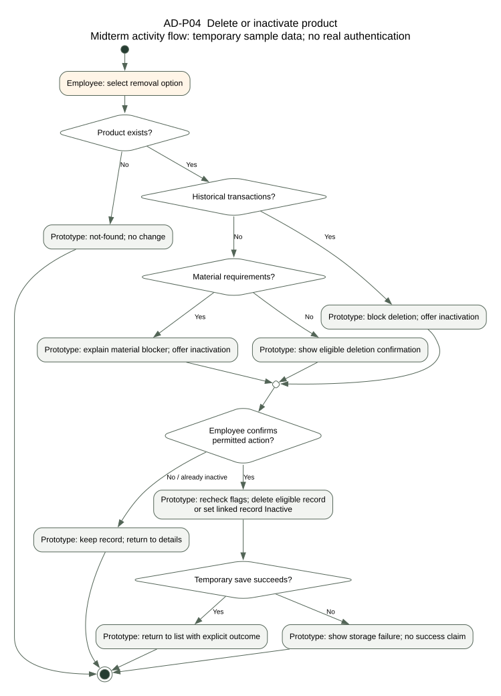
WF-P01 Create product
UC-P01 • FR-P01, FR-P06 • BR-P01 to BR-P04, BR-P11 · Open SVG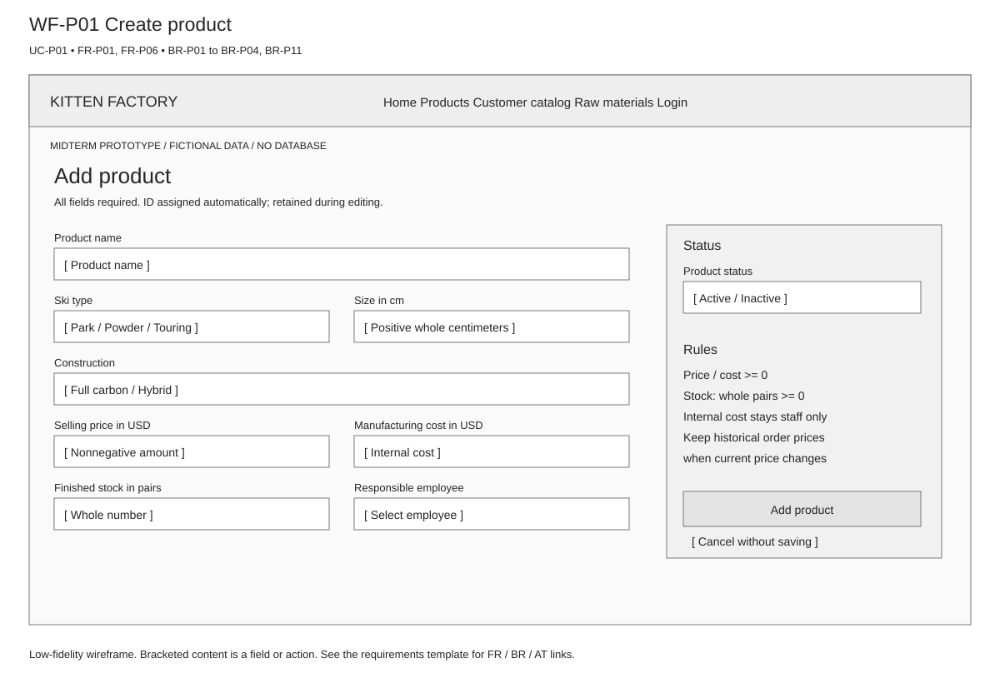
WF-P01E Validation error state
UC-P01 / UC-P03 • FR-P06 • Retain entries and identify invalid fields · Open SVG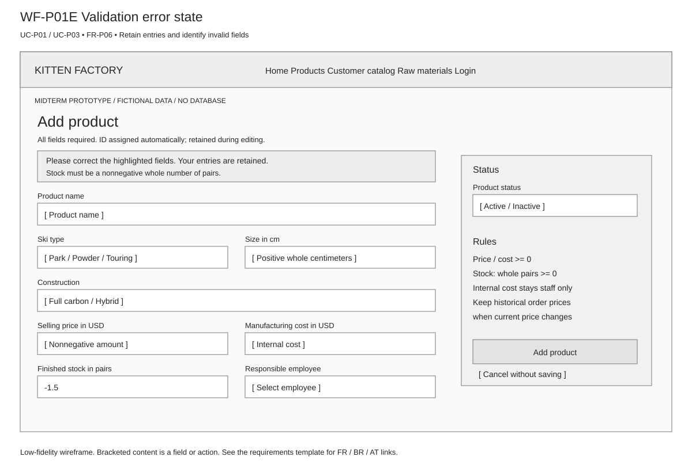
WF-P02 Staff product list
UC-P02 • FR-P02 • Search, combined filters, count, empty state, and row actions · Open SVG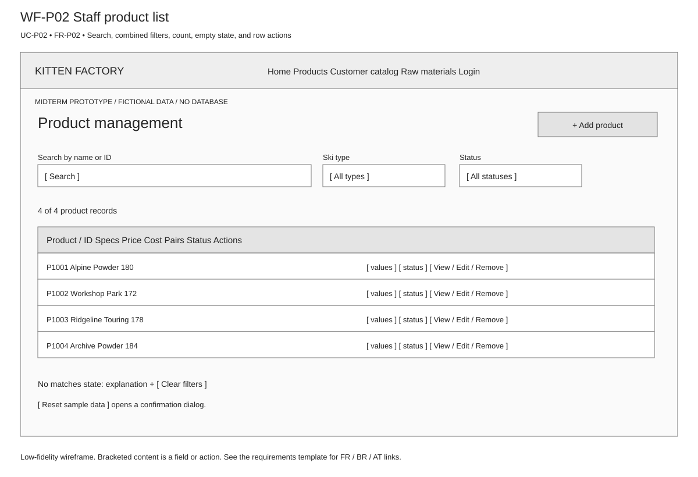
WF-P02D Staff product details
UC-P02 / UC-P04 entry • FR-P02, FR-P05 • Internal data and dependency summary · Open SVG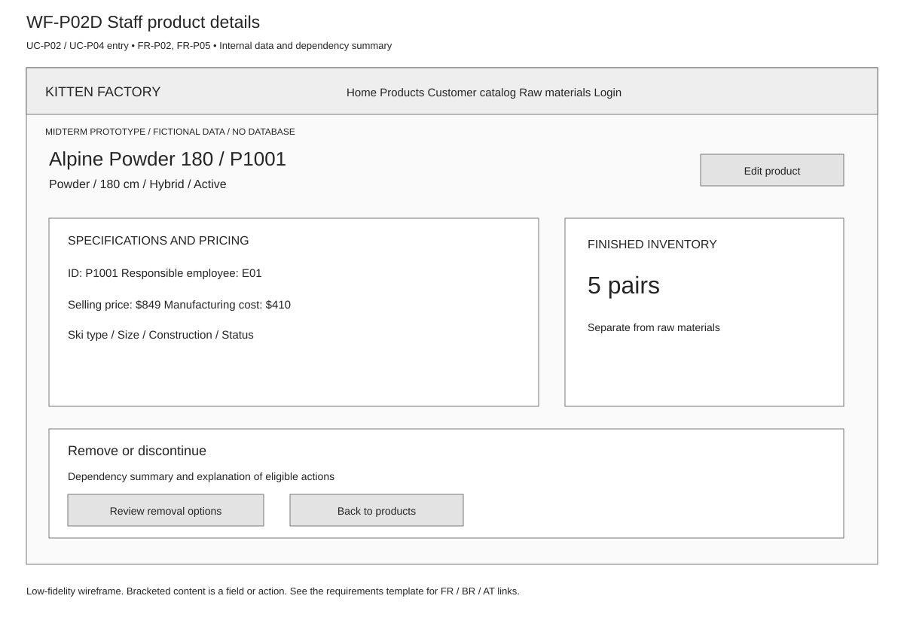
WF-P02C Customer catalog
UC-P02 customer alternative • FR-P03 • BR-P05, BR-P06 • No cost or employee information · Open SVG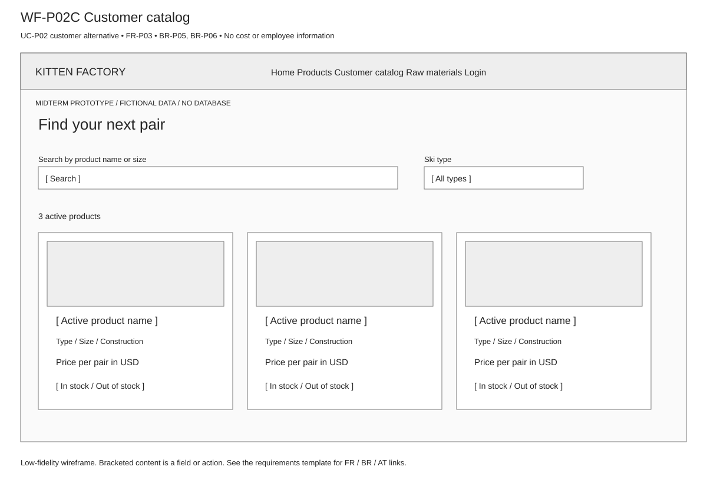
WF-P03 Update product
UC-P03 • FR-P04, FR-P06 • Same ID; validation follows WF-P01E; historical price note · Open SVG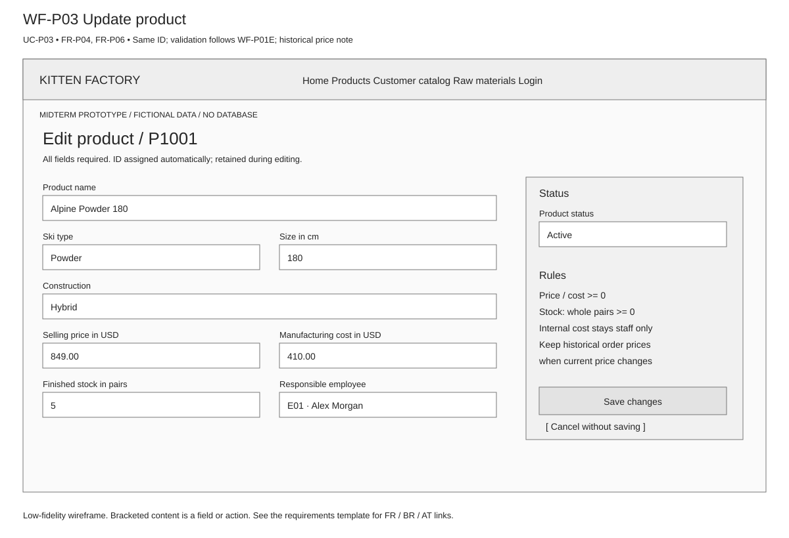
WF-P04 Eligible deletion confirmation
UC-P04 main flow • FR-P05 • BR-P09 • Explicit confirm and cancel · Open SVG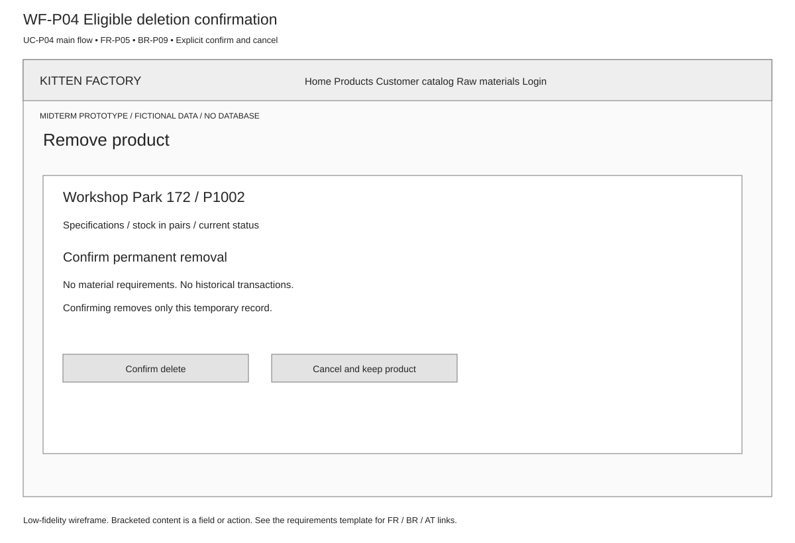
WF-P04H Historical product inactivation
UC-P04 A1 • FR-P05 • BR-P07 • Retain record and history · Open SVG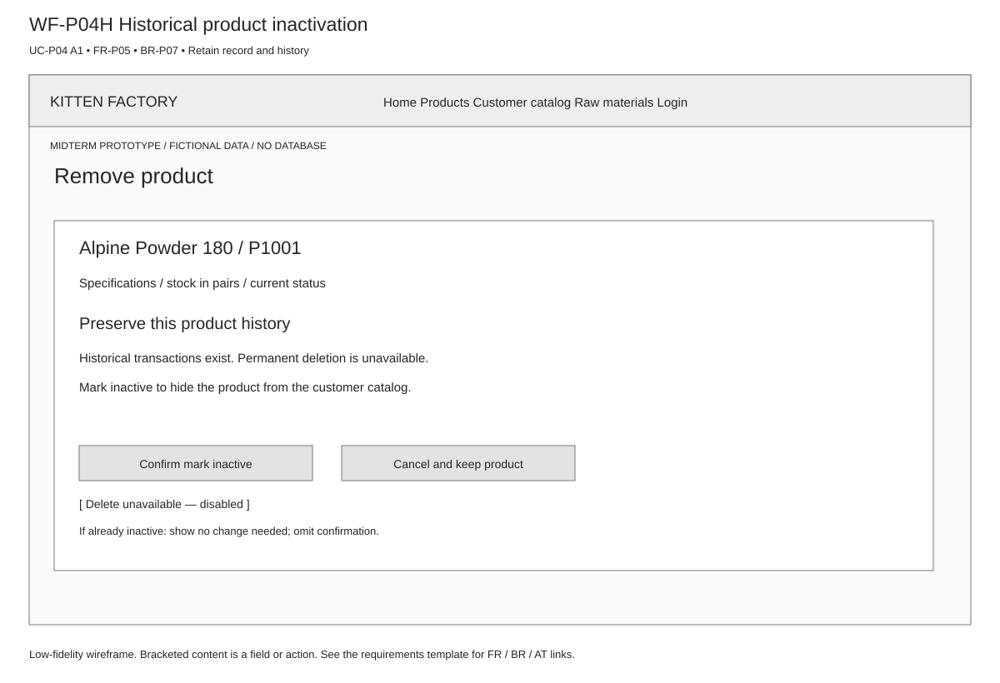
WF-P04B Material dependency blocker
UC-P04 A2 • FR-P05 • BR-P08 • Explain blocker and offer inactivation · Open SVG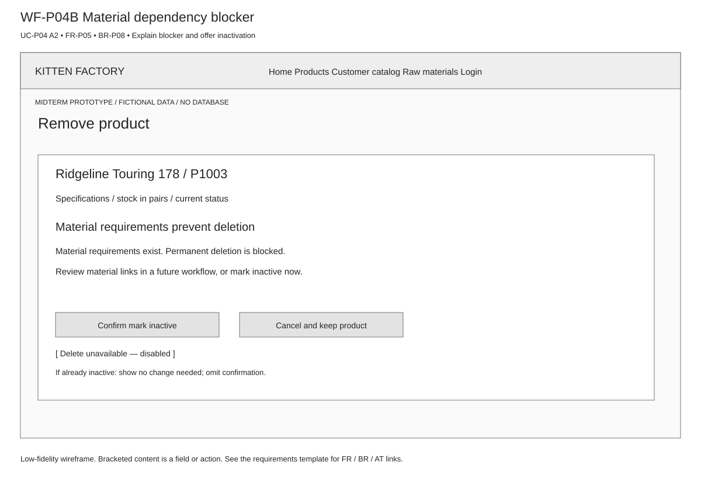